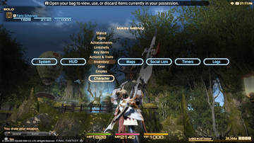

Final Fantasy XIV
This article is about the relaunched game, also known as A Realm Reborn. For the defunct original release, see Final Fantasy XIV (2010 video game).
Final Fantasy XIV is a massively multiplayer online role-playing game (MMORPG) developed and published by Square Enix. Directed and produced by Naoki Yoshida and released worldwide for PlayStation 3 and Windows in August 2013, it replaced the failed 2010 version, with subsequent support for PlayStation 4, OS X, PlayStation 5, and Xbox Series X and Series S. Final Fantasy XIV is set in the fantasy region of Eorzea, five years after the devastating Seventh Umbral Calamity which ended the original version. In the Calamity, the Elder Primal Bahamut escaped from his prison, an ancient space station called Dalamud, unleashing an apocalypse across Eorzea. Through temporal magic, the player character of the original version escaped, reappearing at the start of A Realm Reborn. As Eorzea cements its recovery, the player must fend off a reignited invasion from the Garlean Empire.
Final Fantasy XIV

Collector's edition cover art
Gameplay
Final Fantasy XIV is an MMORPG, featuring a persistent world where players can interact with each other and the environment. Players create and customize their characters for use in the game, including name, race, gender, facial features, and starting class. Unlike in the original release, players may only choose to be a Disciple of War or Magic as a starting class—Disciples of the Hand and Land are initially unavailable. Players must also select a game server for each character. While all supported languages are available on every server, data centers are located in specific regions (i.e., North America, Europe, Japan, and Oceania) to reduce latency between client and server, and players are advised to choose a server in their region.[3] Regardless of server or language, players can use a large library of automatically translated game terms and general phrases, allowing players who speak different languages to communicate.[4]
Interface
Final Fantasy XIV's PC beta version interface, navigated by a point and click widget system
Final Fantasy XIV's home console interface, navigated by a cross-bar system
PC and home console versions use a unified user interface and control scheme. Any combination of a keyboard, mouse, and game controller may be used; for console players, wireless or USB keyboard and mouse are required for the former. On PC and macOS, the game defaults to drag and drop windows, while on PlayStation and Xbox versions of XIV, the default interface resembles that console's XrossMediaBar. This bar is used to access all menus, maps, logs, and configuration options. The head-up display for both versions includes a message log, party status menu, mini-map, and action bar. The UI offers extensive customization options.
Actions and battle commands differ between PC, macOS and console versions. The PC and macOS versions supports both point and click and keyboard input for commands or macros.
Character Progression
Players improve their characters by gaining experience points (EXP) and acquiring stronger equipment. After gaining enough XP, the character will "level up," improving their statistics, enhancing the character's performance and often learning new actions. Primary sources of experience points in Final Fantasy XIV include completing quests, exploring instanced dungeons, participating in Full Active Time Events (FATEs), and slaying monsters in the world.[7] Quests, including the "main scenario" questline, are generally short, specific tasks given to the player by non-player characters which reward items and EXP. Completing main scenario quests progresses the overarching plot of the game. Some quests are repeatable, either "daily" quests repeatable each day, or "Levequests," which consume "leve allowances" that the player slowly accrues over time. Dungeons often require multiple players to form a party to enter, but the Duty Support system enables the player to play certain dungeons alone, supported by computer-controlled party members. Some dungeons are for lower-leveled players to gain EXP quickly while others are for experienced players to collect rare items, equipment, and currency.[8] The Duty Roulette system randomly assigns the player to an accessible dungeon, and once per day, awards additional bonus EXP scaled to character level on completion.[9] FATEs permit large groups of players, whether or not they are in a party, to participate in a shared task in the world. These location-specific events include battles with notorious monsters, defending locations, escorting non-player characters, culling wildlife, and assaulting enemy fortresses, among other types.[8] Finally, each enemy the player kills provides EXP, with further EXP available from the Hunting Log, for killing a fixed amount of specific creatures. At maximum level, character progression focuses entirely on acquring stronger equipment, raising the character's "item level." This equipment can be gained through a variety of sources including endgame dungeons, crafting, raids, primal battles, and elite mark hunts.[10]
Plot
Setting
See also: Final Fantasy XIV (2010 video game) § Synopsis
Final Fantasy XIV is set on Hydaelyn, a fictional world of diverse environments across three main continents, focused on the region of Eorzea.[22] Four major city-states are featured: Gridania, in the heavily-forested Black Shroud; Ul'dah, a trade-centric sultanate in arid Thanalan; Limsa Lominsa, a thalassocracy found on the island of Vylbrand; and Ishgard, an isolationist theocracy in snowy, mountainous Coerthas. Eastward, a land bridge connects eastern Eorzea to the other main continents, conquered by the Garlean Empire. Other cultures include the various endemic tribes, such as Sylphs and Kobolds; scholarly Sharlayan, which practices strict nonintervention; and Ala Mhigo, the easternmost city-state of Eorzea, conquered twenty years prior by the Garlean Empire.[23] In the face of the Garlean invasion, Ishgard withdrew from the Eorzean Alliance, leaving the Alliance nearly defunct. Resisting Garlean assaults has left the once-vibrant central territory of Mor Dhona a desolate wasteland.[24]
Eorzean history is divided into "Astral" eras of prosperity and "Umbral" eras of decline, caused by great Calamities.[25] The First Umbral Era marked the end of the age of gods.[26] The Twelve, guardian deities of Eorzea, retreated from direct mortal contact. As an Umbral era fades, society recovers and a new Astral era begins. The Third Astral Era represented the height of the star's magic and technology, under the hegemonic Allagan Empire, which could build space stations, among other wonders. Each Umbral and Astral Era pair corresponds to one of the six basic elements—wind, lightning, fire, earth, ice, and water. The Sixth Umbral Era was believed to be the last, and thus the Sixth Astral Era would last forever, but five years ago, the Garlean Empire triggered the Seventh Umbral Calamity.[26]
Characters
The player character is an Eorzean adventurer during the Seventh Umbral Era who joins one of the three Grand Companies: Gridania's Order of the Twin Adder under Elder Seedseer Kan-E-Senna; Ul'dah's Immortal Flames, under Flame General Raubahn Aldynn; and the Maelstrom of Limsa Lominsa under Admiral Merlwyb Bloefhiswyn.[31] Their allies include Minfilia and her Scions of the Seventh Dawn, the unified remnants of two supporting organizations from the Sixth Astral Era, Louisoix's Circle of Knowing and Minfilia's Path of the Twelve.[32] Members include Thancred, Yda, Papalymo, Urianger, and Y'shtola. Y'shtola often represents Final Fantasy XIV in crossovers like Theatrhythm Final Fantasy: Curtain Call and Dissidia Final Fantasy NT.[33][34] Louisoix's twin grandchildren, Alphinaud and Alisaie, follow his example to aid Eorzea. Finally, Cid Garlond heads Garlond Ironworks, a technology company providing airships, weapons, and infrastructure to the Alliance.[32]
Garlean antagonists include Legatus Gaius van Baelsar of the XIVth Legion and his lieutenants, Livia sas Junius, Rhitahtyn sas Arvina, and Nero tol Scaeva. The Tribes also threaten the uneasy peace by summoning primals, aetherial deities who deplete the land of its life-sustaining energy.[35] Both are manipulated by the Ascians, inscrutable immortals hellbent on awakening their dark god Zodiark, whose revival imperils all of Hydaelyn.[36]